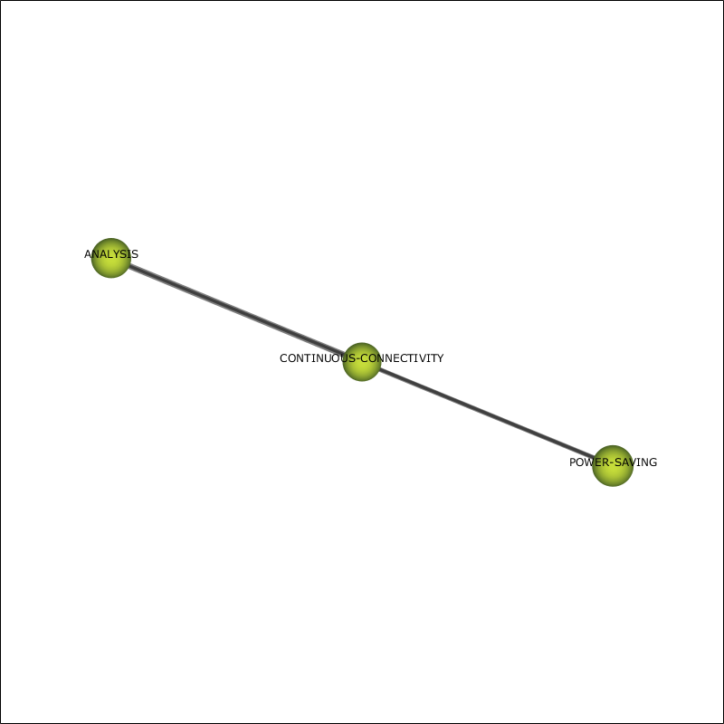

SciMAT report - subperiod 1995-2015 - cluster CONTINUOUS-CONNECTIVITY
Cluster info:
- Name: CONTINUOUS-CONNECTIVITY
- Density: 50
- Densisty range: 0.82
- Centrality: 0.49
- Centrality range: 0.29
Cluster network:

Internal links:
Internal links
| Node A |
Node B |
Weight |
| POWER-SAVING |
ANALYSIS |
0.33 |
| POWER-SAVING |
CONTINUOUS-CONNECTIVITY |
0.5 |
| ANALYSIS |
CONTINUOUS-CONNECTIVITY |
0.67 |
External links:
External links
| Node A |
Cluster node A |
Node B |
Cluster node B |
Weight |
| POWER-SAVING |
CONTINUOUS-CONNECTIVITY |
GREEN-COMPUTING |
CLOUD-COMPUTING |
0.01 |
| POWER-SAVING |
CONTINUOUS-CONNECTIVITY |
GREEN-IT |
INFORMATION-SYSTEMS |
0.01 |
| GREEN-IT |
INFORMATION-SYSTEMS |
ANALYSIS |
CONTINUOUS-CONNECTIVITY |
0.01 |
| GREEN-IT |
INFORMATION-SYSTEMS |
CONTINUOUS-CONNECTIVITY |
CONTINUOUS-CONNECTIVITY |
0.02 |
Documents associated with the cluster
unionDocuments (100 first documents with highest impact)
- MITTAL, S, VETTER, JS, A Survey Of Methods For Analyzing And Improving Gpu Energy Efficiency. Acm Computing Surveys 47:2 null-null (2015). Times cited: 104
- MANCUSO, V, ALOUF, S, Analysis Of Power Saving With Continuous Connectivity. Computer Networks 56:10 2481-2493 (2012). Times cited: 19
- ALOUF, S, MANCUSO, V, FOFACK, NC, Analysis Of Power Saving And Its Impact On Web Traffic In Cellular Networks With Continuous Connectivity. Pervasive And Mobile Computing 8:5 646-661 (2012). Times cited: 6
- GHOSE, T, NAMBOODIRI, V, PENDSE, R, Thin Is Green: Leveraging The Thin-client Paradigm For Sustainable Mobile Computing. Computers & Electrical Engineering 45:null 155-168 (2015). Times cited: 4
- WEN, CJ, LONG, X, MU, YF, Dynamic Power Saving Via Least-square Self-tuning Regulator In The Virtualized Computing Systems. Journal Of Systems Science & Complexity 28:1 60-79 (2015). Times cited: 1